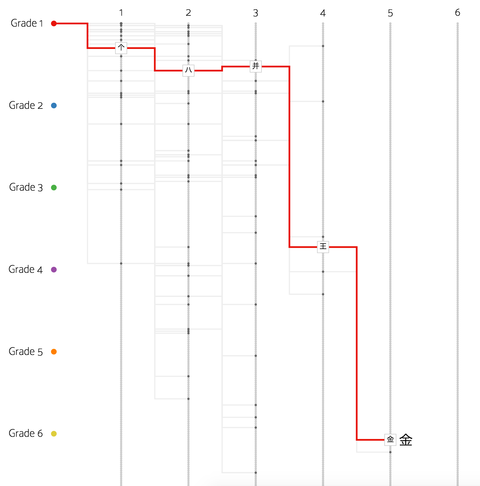
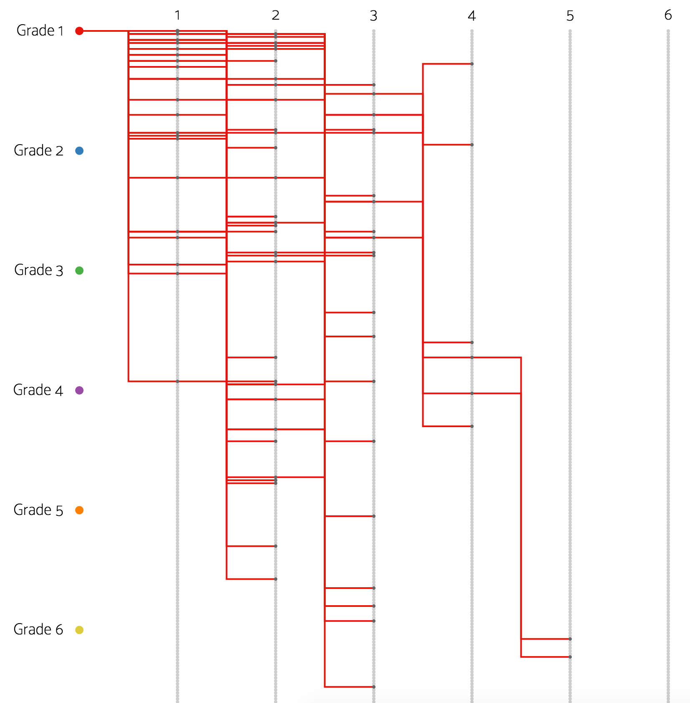

Kanji
Deconstructed
Deconstructed

Learning Japanese characters, or kanji, is a daunting experience for any non-native speaker of the language. Japanese kanji can sometimes be very complex structures, and there are different ways in which that complexity may be measured. One measure is simply stroke count, with more complex characters featuring higher numbers of strokes. Another related measure, though less commonly considered, is the number of parts that constitute a single kanji character. These subparts, known as radicals, lend both structural and semantic meaning and value to a character. In this project, kanji characters are mapped against one another by virtue of their structural components. Doing so reveals how certain common radicals and parts dominate the structure of different kanji characters.
Reading the Visualization
In this visualization, each line represents a single character in the total set of jouyou kanji (常用漢字). Lines are colored according to the grade in which they are introduced in the Japanese school system, from Grade 1 to secondary school. When you hover over a single line, all of that kanji character's composite parts (including its radical) are displayed. Each step in the line along the horizontal axis represents an additional part (component) of the character; vertical position, meanwhile, corresponds to the stroke complexity of the respective kanji component (radicals with only one stroke are closer to the top of the visualization, while those with more strokes progress downward). The represented kanji character for each line is displayed at the end of the line. To see all the kanji for a given grade, click the colored circle next to that grade or its respective label.


In addition to the lines representing each kanji character, the circles indicate radicals and kanji parts represented across all kanji displayed. These gray circles vary in size according to the relative number of kanji that contain them: larger dark gray circles indicate radicals or parts that are more commonly found in the kanji displayed. As you read the visualization, it is worth noting those kanji that extend far to the right and down the chart, as these indicate complex kanji characters with many individual subparts with many strokes.
Acknowledgments
This visualization was built in D3.js by Steven Braun. The data are taken from Jim Breen's KRADFILE, a concordance of all kanji and their composite radicals. The code for this project is freely available on GitHub.